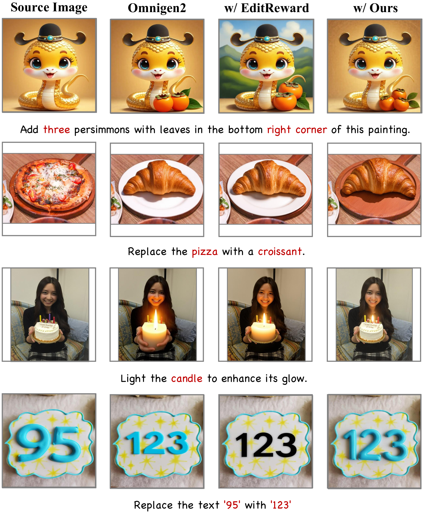
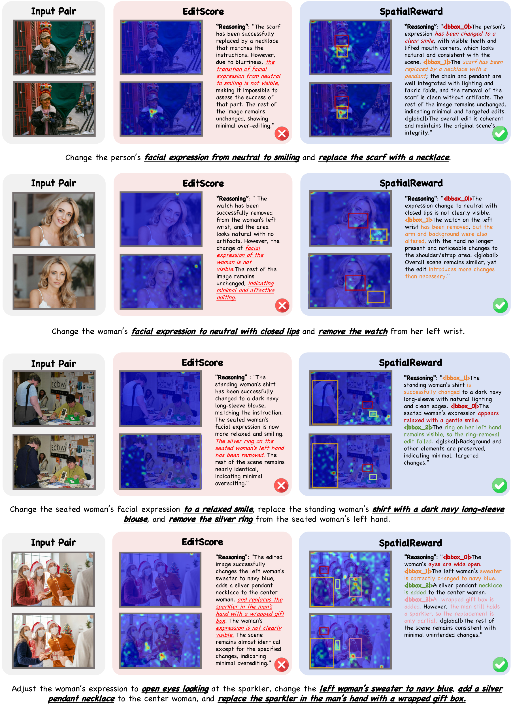
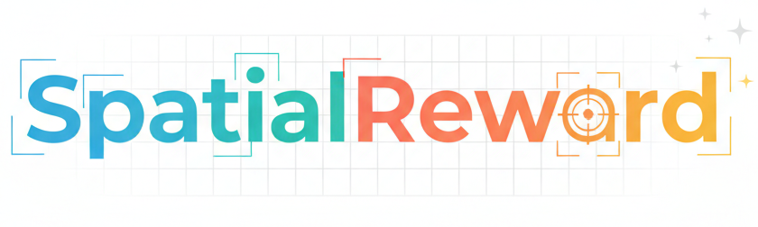
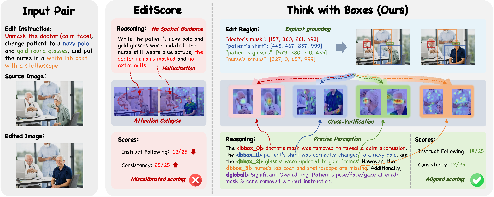
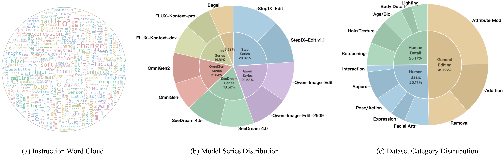
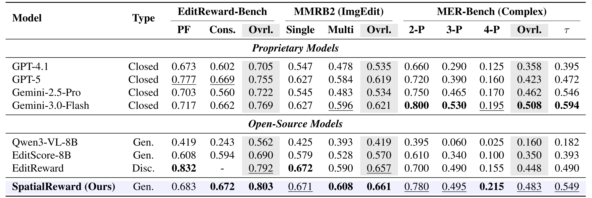
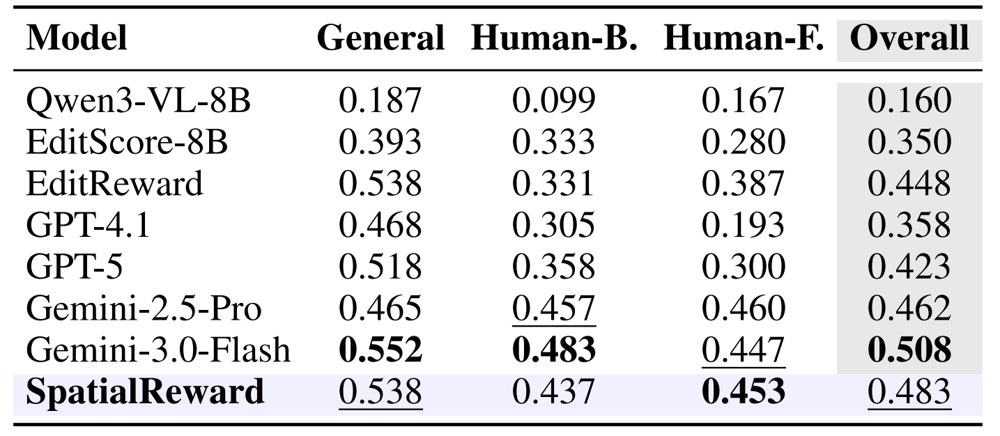
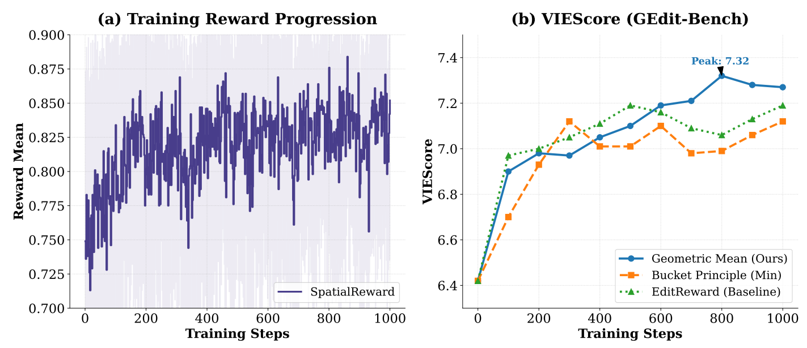
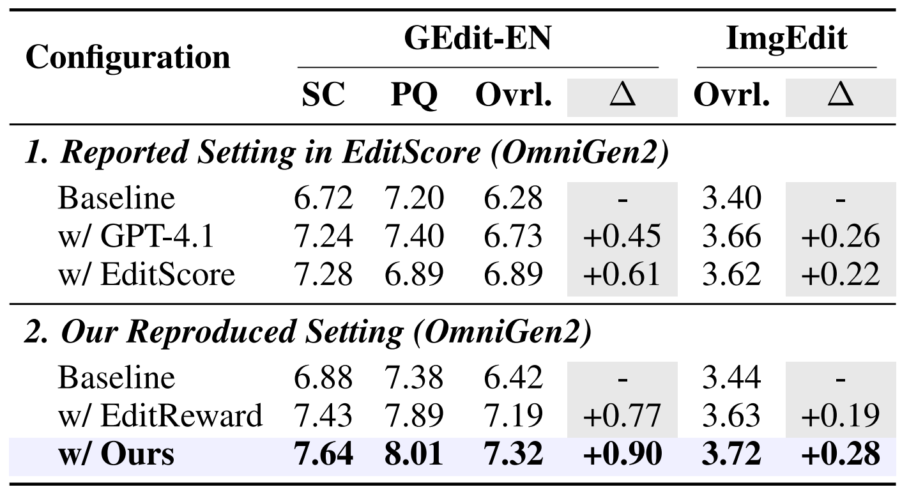

Qualitative Results
RL Training Cases



Attention Visualization
Spatial supervision optimizes the model's attention distribution, focusing on relevant regions.


Online Reinforcement Learning (RL) offers a promising avenue for complex image editing but is currently constrained by the scarcity of reliable and fine-grained reward signals. Existing evaluators frequently struggle with a critical perception gap we term “Attention Collapse,” where models neglect cross-image comparisons and fail to capture fine-grained details, resulting in inaccurate perception and miscalibrated scores. To address these limitations, we propose SpatialReward, a reward model that enforces precise verification via explicit spatial reasoning. By anchoring reasoning to predicted edit regions, SpatialReward grounds semantic judgments in pixel-level evidence, significantly enhancing evaluative accuracy. Trained on a curated 260k spatial-aware dataset, our model achieves state-of-the-art performance on MMRB2 and EditReward-Bench, and outperforms proprietary evaluators on our proposed MultiEditReward-Bench. Furthermore, SpatialReward serves as a robust signal in online RL, boosting OmniGen2 by +0.90 on GEdit-Bench—surpassing the leading discriminative model and doubling the gain of GPT-4o (+0.45). These results demonstrate that spatial reasoning is essential for unlocking effective alignment in image editing.
Existing reward models suffer from "Attention Collapse," failing to attend to the source image during evaluation. SpatialReward introduces a "Think-with-Boxes" mechanism, predicting edit regions to anchor reasoning and enforce cross-image verification.

We introduce MultiEditReward-Bench, a challenging benchmark focusing on multi-turn and complex editing scenarios.

SpatialReward achieves state-of-the-art performance, outperforming proprietary models on various benchmarks.


Using SpatialReward as a reward signal for Online RL significantly improves the performance of base models like OmniGen2.



Spatial supervision optimizes the model's attention distribution, focusing on relevant regions.

@article{long2026spatialreward,
title={SpatialReward: Bridging the Perception Gap in Online RL for Image Editing via Explicit Spatial Reasoning},
author={Long, Yancheng and Yang, Yankai and Wei, Hongyang and Chen, Wei and Zhang, Tianke and Liu, Changyi and Jiang, Kaiyu and Chen, Jiankang and Tang, Kaiyu and Wen, Bin and others},
journal={arXiv preprint arXiv:2602.07458},
year={2026}
}